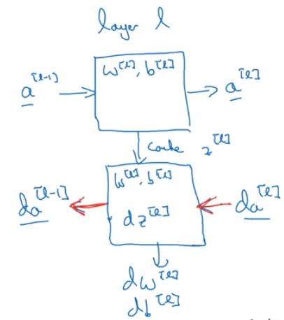
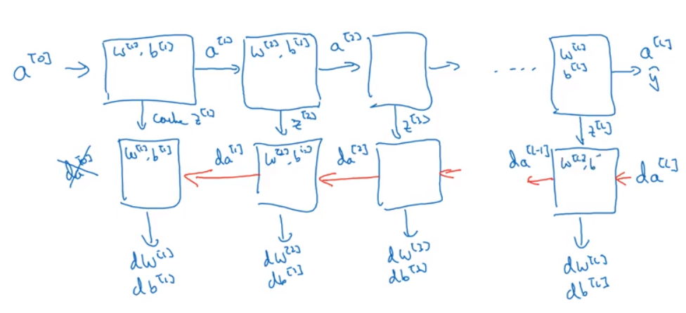

Forward and Back Prop in Deeper Networks
The Dimensions
As you add more and more layers into your Network, juggling all of the matrix dimensions becomes an increasingly tedious task, especially when working out all of the gradients.
However, the following heuristics may prove useful:
- The weights matrix,
WNand its partialdWNmust have the same dimensions - Same goes for the activation layers,
A, and intermediate linear combinations,Z - Working out the dimensions in advance gives you a good sanity check before you find yourself wrist-deep in
numpy, trying to debug withobj.shape
The following image is an example of a deeper Net structure, and its corresponding dimensions.
from IPython.display import Image
Image('images/deeper.PNG')
Cache over Everything
When we calculate through backprop for a single layer, we use da_l, the derivative of that activation layer, to look for:
- The derivatives
dW_landdb_lthat we’re going to use for gradient descent da_l-1, the derivative used as an input for the next layer
First we calculate the derivative of the linear combination for that layer, dZl
$dZ^{[l]} = dA^{[l]} * g’^{[l]} (Z^{[l]})$
$dZ^{[l]} = W^{[l+1]T}dZ^{[l+1]} * g’^{[l]}(Z^{[l]})$
Note: we use both W_l+1 and Zl
$dW^{[l]} = \frac{1}{m} dZ^{[l]}A^{[l-1]T}$
Note: we use A_l-1
$db^{[l]} = \frac{1}{m} \sum dZ^{[l]}$
$dA^{[l-1]} = W^{[l]T}dZ^{[l]}$
Suffice to say, caching the intermediate values of the activation layers during forward prop is extremely useful in helping calculate the backward steps.
One Layer:
Image('images/forward_back_one_layer.PNG')
At Scale:
Image('images/forward_back_prop.PNG')